Tomtini · Bauanleitung
Tomtes Haus
Die Wichteltür nach dem Foto: Tür mit Herz zum Aufmachen unter einem Bogen mit Krone, dahinter Platz für eine Bildkarte, zwei Stufen mit Laternen, Säulen aus Eisglas und ein schräges Dach auf Scharnieren mit Schnee und Stechpalme.
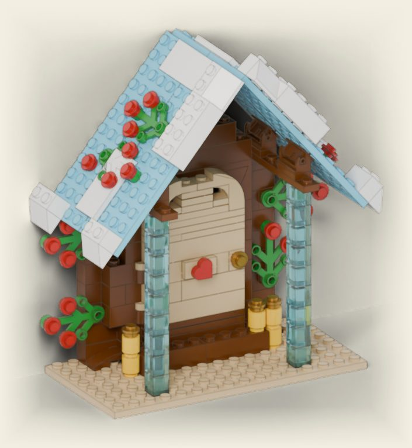
Vor dem Bauen
- Steine suchen oder bestellen.Die Teileliste unten hat offizielle Teilenummern. Was in eurer Kiste fehlt, gibt es einzeln zu kaufen.
- Farben sind frei.Das Dach kann auch rot oder grau sein, die Säulen weiß. Nur die Form zählt.
- Neue Teile sind orange umrandet.Im Kasten unter jedem Bild stehen die Teile dieses Schritts.
- Achtung, Kleinteile.Verschluckbar, Erstickungsgefahr, nicht für Kinder unter 3 Jahren. Mit Kleinkind, Hund oder Katze das Portal erhöht aufstellen und die Kleinteile ab und zu nachzählen.
- An der Grundplatte tragen.Nicht am Dach anheben. Ein Klebepad oder etwas Klebeknete hält das Haus an der Wand.
- Keine Kerzen.Kein echtes Teelicht in oder hinter das Portal, nur ein LED-Teelicht, und nicht direkt an die Bildkarte.
Die Tür und die Bildkarten
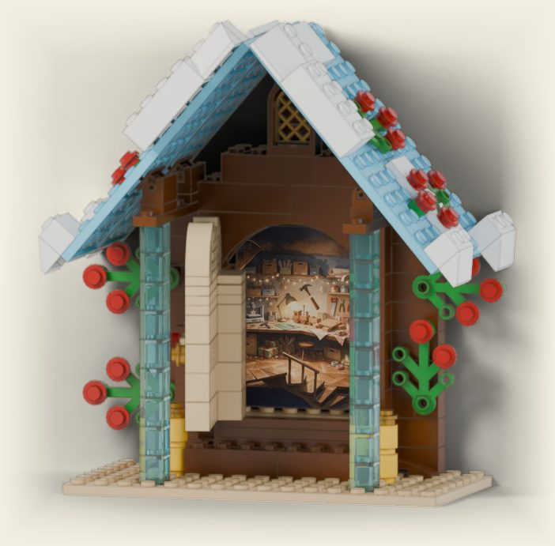
Die Tür hängt links an zwei Scharnieren und schwenkt am goldenen Knauf nach vorn auf, bis sie an die linke Eissäule stößt. Bitte am Knauf öffnen, nicht am Herz. Dahinter ist ein schmaler Schlitz, in den eine Karte von 46 × 60 mm passt; oben schaut sie durch den offenen Bogen (beim Ausschneiden lieber einen halben Millimeter zu klein als zu groß). So kann Tomte jeden Tag etwas anderes hinter der Tür zeigen: seine Werkstatt, einen Brief, ein Bild oder einen Hinweis.
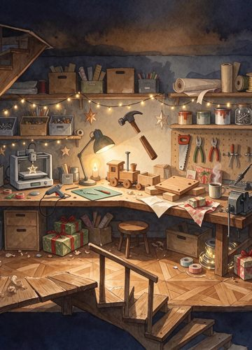
Bildkarten zum Ausdrucken (PDF)
Ein A4-Bogen mit drei Karten „Tomtes Werkstatt“ und drei leeren Karten zum Bemalen. In Originalgröße drucken, auf festem Papier.
Teileliste
| Anzahl | Teil | Farbe | Teilenummer | |
|---|---|---|---|---|
| 8× | Pflanze Blätter 4×3 | Grün · Green | 2423 | |
| 1× | Fliese 1×1 Herz | Rot · Red | 39739 | |
| 27× | Rundplatte 1×1 | Rot · Red | 4073 | |
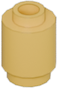 | 5× | Rundstein 1×1 | Gelb · Yellow | 3062b |
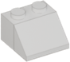 | 6× | Dachstein 45° 2×2 | Weiß · White | 3039 |
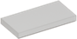 | 4× | Fliese 2×4 | Weiß · White | 87079 |
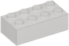 | 2× | Stein 2×4 | Weiß · White | 3001 |
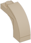 | 2× | Bogenstein 1×3×2, oben gebogen | Beige · Tan | 6005 |
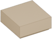 | 2× | Fliese 1×1 | Beige · Tan | 3070b |
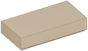 | 2× | Fliese 1×2 | Beige · Tan | 3069b |
| 1× | Fliese 1×6 | Beige · Tan | 6636 | |
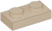 | 3× | Platte 1×2 | Beige · Tan | 3023 |
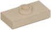 | 1× | Platte 1×2 mit Mittelnoppe | Beige · Tan | 15573 |
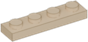 | 2× | Platte 1×4 | Beige · Tan | 3710 |
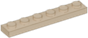 | 4× | Platte 1×6 | Beige · Tan | 3666 |
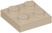 | 1× | Platte 2×2 | Beige · Tan | 3022 |
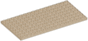 | 1× | Platte 8×16 | Beige · Tan | 92438 |
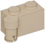 | 2× | Scharnierstein 1×4 Oberteil | Beige · Tan | 3830 |
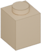 | 1× | Stein 1×1 | Beige · Tan | 3005 |
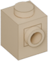 | 3× | Stein 1×1 mit Seitennoppe | Beige · Tan | 87087 |
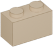 | 2× | Stein 1×2 | Beige · Tan | 3004 |
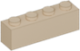 | 1× | Stein 1×4 | Beige · Tan | 3010 |
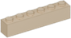 | 5× | Stein 1×6 | Beige · Tan | 3009 |
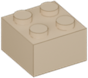 | 1× | Stein 2×2 | Beige · Tan | 3003 |
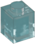 | 18× | Stein 1×1 | Transparent-Hellblau · Trans-Light Blue | 3005 |
| 1× | Bogen 1×8×2 | Rotbraun · Reddish Brown | 16577 | |
| 1× | Fenster 1×2×2⅔ mit Rundbogen | Rotbraun · Reddish Brown | 30044 | |
| 1× | Fliese 1×6 | Rotbraun · Reddish Brown | 6636 | |
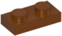 | 6× | Platte 1×2 | Rotbraun · Reddish Brown | 3023 |
| 2× | Platte 1×6 | Rotbraun · Reddish Brown | 3666 | |
| 2× | Platte 1×8 | Rotbraun · Reddish Brown | 3460 | |
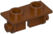 | 4× | Scharnier-Platte 1×2 Oberteil | Rotbraun · Reddish Brown | 3938 |
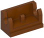 | 4× | Scharnier-Stein 1×2 Unterteil | Rotbraun · Reddish Brown | 3937 |
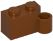 | 2× | Scharnierstein 1×4 Unterteil | Rotbraun · Reddish Brown | 3831 |
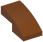 | 2× | Schrägstein gebogen 2×1 | Rotbraun · Reddish Brown | 11477 |
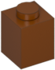 | 7× | Stein 1×1 | Rotbraun · Reddish Brown | 3005 |
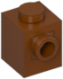 | 4× | Stein 1×1 mit Seitennoppe | Rotbraun · Reddish Brown | 87087 |
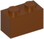 | 26× | Stein 1×2 | Rotbraun · Reddish Brown | 3004 |
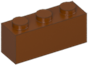 | 2× | Stein 1×3 | Rotbraun · Reddish Brown | 3622 |
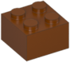 | 1× | Stein 2×2 | Rotbraun · Reddish Brown | 3003 |
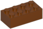 | 5× | Stein 2×4 | Rotbraun · Reddish Brown | 3001 |
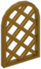 | 1× | Gitterscheibe 1×2×2⅔ Rundbogen | Perlgold · Pearl Gold | 30046 |
| 4× | Rundplatte 1×1 | Perlgold · Pearl Gold | 4073 | |
| 4× | Platte 4×12 | Mittelazur · Medium Azure | 3029 |
Bauschritte
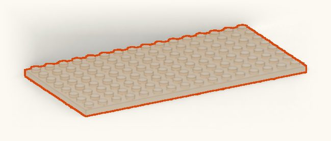
1Grundplatte 8×16 in Beige, lange Seite vorn.
- 1×
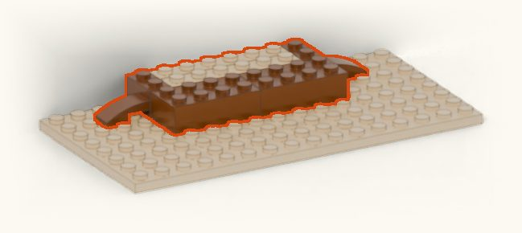
2Unterste Lage. Rahmen: links und rechts je ein rotbrauner Stein 1×2, quer gestellt (von vorn nach hinten) an die hintere Kante, auf die 5. Noppe von links und die 5. Noppe von rechts. Dazwischen bleiben 6 Noppen frei. Außen daneben, in der zweiten Reihe von hinten, je ein gebogener Schrägstein 2×1 als Fuß, Rundung nach außen. Zwischen die Rahmen zwei beige Steine 1×6 hintereinander: die Türschwelle. Direkt davor die Treppe: zwei rotbraune Steine 2×4 nebeneinander, von Rahmen bis Rahmen.
- 2×
- 2×
- 2×
- 2×
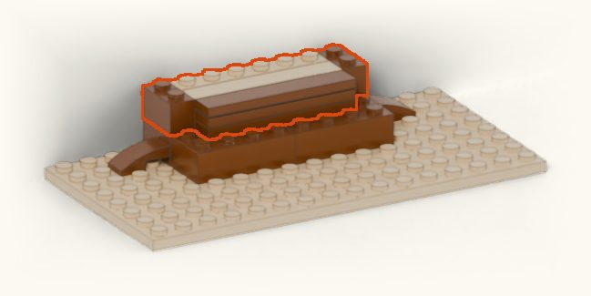
3Rahmen, 2. Lage, auf beiden Seiten. Hinten auf die Schwelle ein beiger Stein 1×6. Davor zwei beige Platten 1×6 und eine glatte beige Fliese 1×6. Auf die hintere Reihe der Treppe, mit einer Noppe Abstand zu beiden Seiten, zwei rotbraune Platten 1×6 und eine glatte rotbraune Fliese 1×6. Die glatten Fliesen sind wichtig: Auf ihnen gleitet später die Tür.
- 2×
- 2×
- 2×
- 1×
- 1×
- 1×
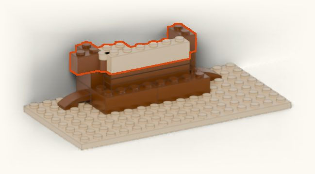
4Erstes Türscharnier: rotbraune und beige Scharnierhälfte zusammenstecken, zusammen sind sie so lang wie ein Stein 1×4. Das Scharnier liegt längs zur Vorderkante: die rechte Noppe der rotbraunen Hälfte auf die vordere Noppe des linken Rahmens, ihre linke Noppe ragt frei nach links. Die beige Hälfte zeigt nach rechts in die Türöffnung, das Gelenk liegt vorn. Das Scharnier wackelt noch, bis Schritt 5. Hinter das Scharnier einen rotbraunen Stein 1×1 auf die freie hintere Noppe des Rahmens. Rechts Rahmen, 3. Lage. Vor das Scharnier einen beigen Stein 1×6 lose auf die Fliese der Treppe legen: die unterste Türlage.
- 1×
- 1×
- 1×
- 1×
- 1×
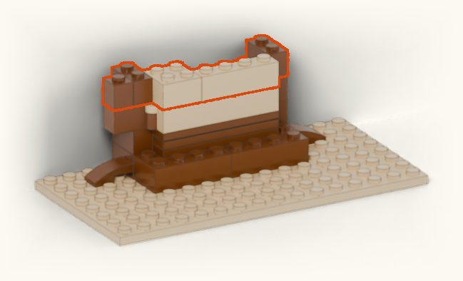
5Rahmen, 4. Lage, auf beiden Seiten. Links außen auf die rotbraune Scharnierhälfte zusätzlich einen rotbraunen Stein 1×1. Tür: ein beiger Stein 2×2 über beige Scharnierhälfte und Türlage, daneben ein beiger Stein 1×4. Jetzt hängt die unterste Türlage fest am Scharnier.
- 2×
- 1×
- 1×
- 1×
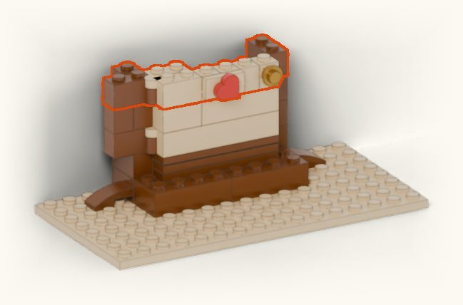
6Zweites Scharnier genau über das erste, dahinter wieder ein rotbrauner Stein 1×1. Rechts Rahmen, 5. Lage. Nächste Türlage, von links: beiger Stein 1×2, zwei beige Steine mit Seitennoppe nebeneinander (Noppe nach vorn), ein beiger Stein 1×1, ganz rechts noch ein Stein mit Seitennoppe. Herz: beige Platte mit Mittelnoppe auf die zwei nebeneinanderliegenden Seitennoppen, rotes Herz drauf, Spitze nach unten. Auf die Seitennoppe ganz rechts eine goldene runde Platte 1×1: der Türknauf.
- 3×
- 1×
- 1×
- 1×
- 1×
- 1×
- 1×
- 1×
- 1×
- 1×
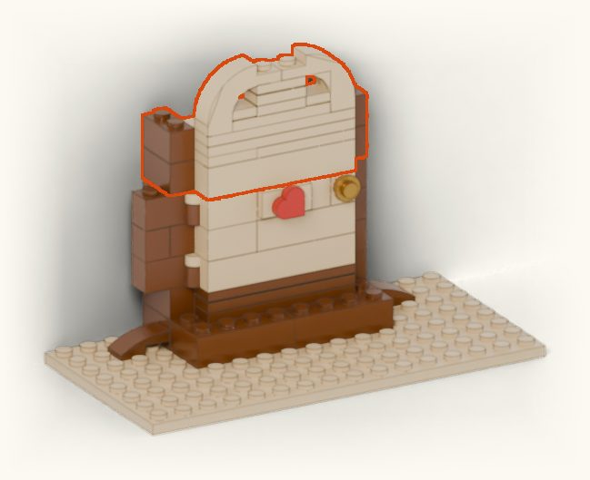
7Rahmen, 6. und 7. Lage, auf beiden Seiten. Tür: zuerst noch eine Türlage, vorn ein beiger Stein 1×6, hinten über dem Scharnier ein beiger Stein 1×2. Darauf beige Platte 2×2 über dem Scharnier und Platte 1×4 daneben. Darüber vorn zwei Platten 1×6, hinten über dem Scharnier eine Platte 1×2 und eine glatte Fliese 1×2. Runder Abschluss, von unten nach oben, alles mittig: eine Platte 1×4; darauf eine Platte 1×2 mit je einer glatten Fliese 1×1 links und rechts daneben; darauf noch eine Platte 1×2 und eine glatte Fliese 1×2. Dann links und rechts je einen beigen Bogenstein 1×3×2 (Bogenform, 3 Noppen lang, 2 Steine hoch) darüberstülpen, die hohe Seite zur Mitte. Jetzt einmal am Knauf auf- und zumachen: Die Tür muss frei schwenken, oben und unten nichts klemmen.
- 4×
- 3×
- 2×
- 2×
- 2×
- 2×
- 2×
- 1×
- 1×
- 1×
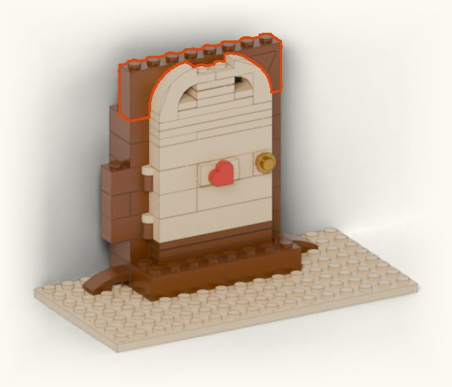
8Hinter der Tür bleibt die hinterste Reihe ganz frei, von der Schwelle bis oben: Das ist der Kartenschlitz. Dann den großen Bogen auf die vorderen Noppen der Rahmen. Der Bogen sitzt über der Tür, nicht auf ihr, und bleibt hinten offen.
- 1×
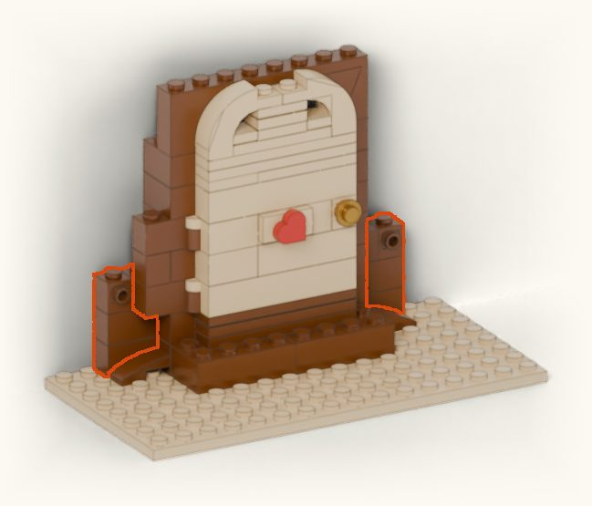
9Hintere Pfosten: links und rechts an der hinteren Kante, auf der 3. bis 4. Noppe von außen, je drei rotbraune Steine 1×2 übereinander. Der oberste ist jeweils geteilt: ein Stein 1×1 innen am Rahmen, außen ein Stein mit Seitennoppe, Noppe nach vorn.
- 4×
- 2×
- 2×
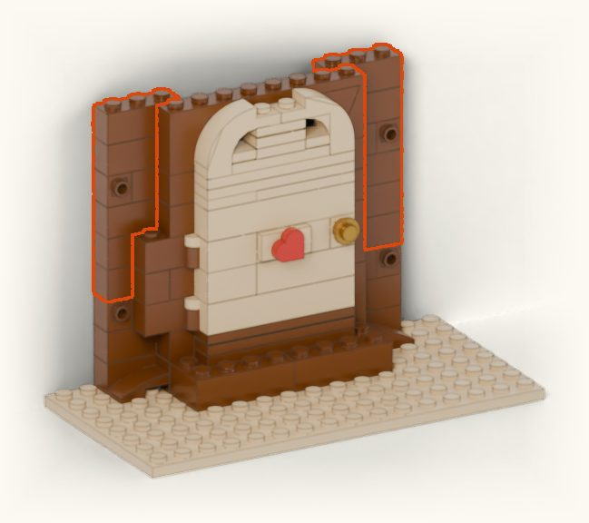
10Pfosten weiter hochbauen, auf beiden Seiten gleich: drei rotbraune Steine 1×2, dann wieder ein geteilter Stein (innen ein Stein 1×1, außen ein Stein mit Seitennoppe, Noppe nach vorn), darauf noch ein Stein 1×2. Obendrauf je ein Stein 1×3, er ragt eine Noppe über die hintere Reihe des Rahmens, darunter bleibt eine Lücke. Die Krone in Schritt 11 hält ihn fest. Erst danach kommt die Krone, sonst passt der Stein 1×3 nicht mehr darunter.
- 8×
- 2×
- 2×
- 2×
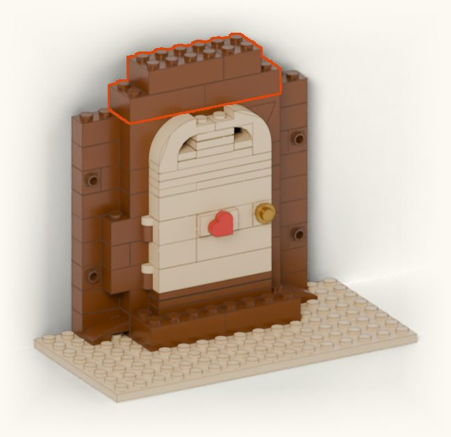
11Krone: zwei Steine 2×4 über Bogen und Rahmen, darüber ein Stein 2×4 und rechts ein Stein 2×2.
- 3×
- 1×
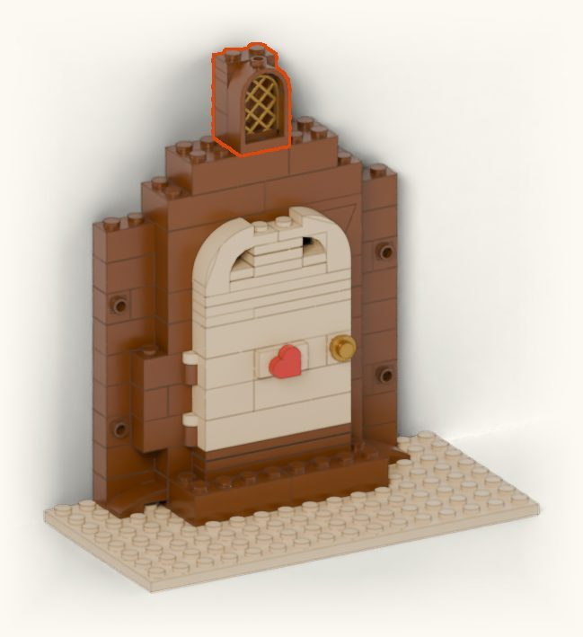
12Gitterscheibe von hinten ins Fenster klicken (Erwachsene), Fenster vorn mittig auf die Krone, dahinter zwei Steine und zwei Platten.
- 2×
- 2×
- 1×
- 1×
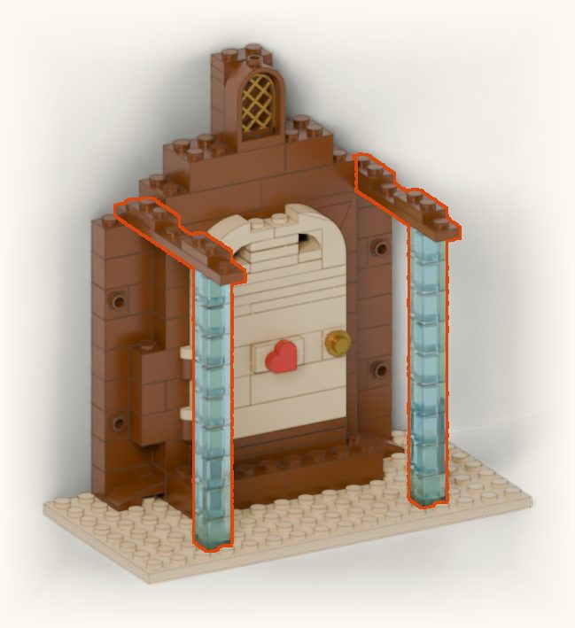
13Eissäulen: je neun transparente Steine 1×1 in der zweiten Reihe von vorn, 4. Noppe von außen. Erst unter die Platte 1×8 stecken, dann Säule und Platte zusammen aufsetzen, hinten auf den Pfosten. Auf die Platte zwei Platten 1×2 (2. bis 3. und 6. bis 7. Noppe von vorn).
- 18×
- 4×
- 2×
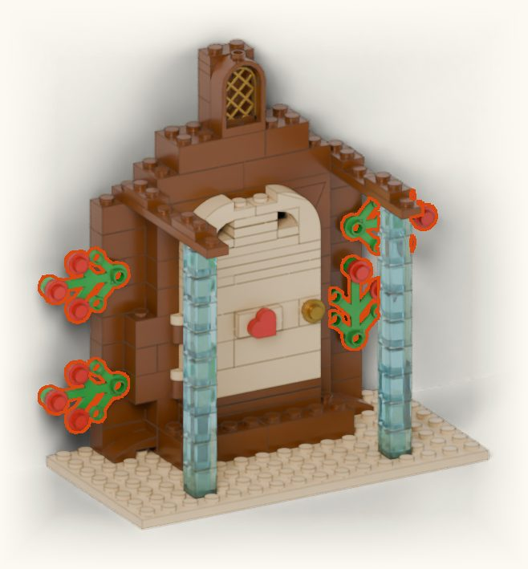
14Stechpalme: je ein grünes Blätterteil auf die vier Seitennoppen an den Pfosten. Unten links zeigen die Blätter nach außen, unten rechts nach oben, die beiden oberen nach außen. Beeren: rote runde Platten 1×1 auf die Spitze des mittleren Blatts und auf die äußere Noppe der beiden Seitenblätter, unten rechts nur auf die Spitze und das linke Seitenblatt. Danach die Tür noch einmal öffnen und schließen.
- 11×
- 4×
- 15
Linke Dachhälfte in der Hand vormontieren: zwei blaue Platten 4×12 nebeneinanderlegen. Zwei weiße Fliesen 2×4 über die Fuge legen, das hält beide Platten zusammen: eine ganz oben am First (quer zur Dachschräge), eine weiter unten (entlang der Dachschräge). Scharnier-Unterteil und -Oberteil zusammenstecken und zwei Scharniere unter die 5. Noppe von der Unterkante stecken (2. bis 3. und 6. bis 7. Noppe von vorn). Schnee an der Vorderkante: oben ein weißer Dachstein 2×2, in der Mitte ein weißer Stein 2×4, beide ragen eine Reihe nach vorn über. Unten vorn und hinten je ein weißer Dachstein, der eine Noppe über die Unterkante hängt. Dazu zwei Stechpalmen-Zweige mit je drei roten Beeren (Spitze des mittleren Blatts und äußere Noppen der Seitenblätter) und zwei einzelne rote Beeren auf der Platte. Dann steil hochgeklappt auf die Platten 1×2 drücken, die Hand direkt über den Scharnieren, und festhalten, bis die rechte Hälfte sitzt.
- 8×
- 3×
- 2×
- 2×
- 2×
- 2×
- 2×
- 1×
- 16
Rechte Dachhälfte spiegelbildlich genauso. Beide Hälften herunterklappen, bis sie sich oben berühren. So halten sie sich gegenseitig. Das Dach ist nicht zum Öffnen gedacht.
- 8×
- 3×
- 2×
- 2×
- 2×
- 2×
- 2×
- 1×
- 17
Laternen: rechts ein gelber runder Stein 1×1 auf die vordere rechte Ecke der Treppe, obendrauf eine goldene runde Platte 1×1. Links und rechts neben der vorderen Reihe der Treppe, direkt auf der Grundplatte, je zwei gelbe runde Steine 1×1 übereinander mit goldener runder Platte obendrauf. Die linke Laterne ist zusammen mit der Eissäule der Türstopper.
- 5×
- 3×
- 18
Fertig. Mit dem Rücken an die Wand stellen. Tür am Knauf öffnen, bis sie anstößt. Bildkarte (höchstens 4,6 × 6 cm) schräg hineinschieben, linke Kante zuerst, dann gerade an die Wand lehnen. Oben schaut sie durch den offenen Bogen. Tür schließen. Zum Tragen die Grundplatte mit beiden Händen flach unterfassen, nicht am Dach anheben.
Fehlende Steine bestellen
Die Teilenummern gelten bei LEGO selbst (Einzelsteine im LEGO Shop unter „Pick a Brick“) und bei Online-Marktplätzen für Einzelsteine wie BrickLink oder BrickOwl.
Für BrickLink gibt es die ganze Liste als Wunschliste zum Einfügen: kopieren, dort unter „Wanted“ → „Upload“ einfügen, dann zeigt BrickLink die Händler mit allen Teilen.
<INVENTORY> <ITEM><ITEMTYPE>P</ITEMTYPE><ITEMID>11477</ITEMID><COLOR>88</COLOR><MINQTY>2</MINQTY></ITEM> <ITEM><ITEMTYPE>P</ITEMTYPE><ITEMID>15573</ITEMID><COLOR>2</COLOR><MINQTY>1</MINQTY></ITEM> <ITEM><ITEMTYPE>P</ITEMTYPE><ITEMID>16577</ITEMID><COLOR>88</COLOR><MINQTY>1</MINQTY></ITEM> <ITEM><ITEMTYPE>P</ITEMTYPE><ITEMID>2423</ITEMID><COLOR>6</COLOR><MINQTY>8</MINQTY></ITEM> <ITEM><ITEMTYPE>P</ITEMTYPE><ITEMID>3001</ITEMID><COLOR>1</COLOR><MINQTY>2</MINQTY></ITEM> <ITEM><ITEMTYPE>P</ITEMTYPE><ITEMID>3001</ITEMID><COLOR>88</COLOR><MINQTY>5</MINQTY></ITEM> <ITEM><ITEMTYPE>P</ITEMTYPE><ITEMID>3003</ITEMID><COLOR>2</COLOR><MINQTY>1</MINQTY></ITEM> <ITEM><ITEMTYPE>P</ITEMTYPE><ITEMID>3003</ITEMID><COLOR>88</COLOR><MINQTY>1</MINQTY></ITEM> <ITEM><ITEMTYPE>P</ITEMTYPE><ITEMID>3004</ITEMID><COLOR>2</COLOR><MINQTY>2</MINQTY></ITEM> <ITEM><ITEMTYPE>P</ITEMTYPE><ITEMID>3004</ITEMID><COLOR>88</COLOR><MINQTY>26</MINQTY></ITEM> <ITEM><ITEMTYPE>P</ITEMTYPE><ITEMID>30044</ITEMID><COLOR>88</COLOR><MINQTY>1</MINQTY></ITEM> <ITEM><ITEMTYPE>P</ITEMTYPE><ITEMID>30046</ITEMID><COLOR>115</COLOR><MINQTY>1</MINQTY></ITEM> <ITEM><ITEMTYPE>P</ITEMTYPE><ITEMID>3005</ITEMID><COLOR>2</COLOR><MINQTY>1</MINQTY></ITEM> <ITEM><ITEMTYPE>P</ITEMTYPE><ITEMID>3005</ITEMID><COLOR>15</COLOR><MINQTY>18</MINQTY></ITEM> <ITEM><ITEMTYPE>P</ITEMTYPE><ITEMID>3005</ITEMID><COLOR>88</COLOR><MINQTY>7</MINQTY></ITEM> <ITEM><ITEMTYPE>P</ITEMTYPE><ITEMID>3009</ITEMID><COLOR>2</COLOR><MINQTY>5</MINQTY></ITEM> <ITEM><ITEMTYPE>P</ITEMTYPE><ITEMID>3010</ITEMID><COLOR>2</COLOR><MINQTY>1</MINQTY></ITEM> <ITEM><ITEMTYPE>P</ITEMTYPE><ITEMID>3022</ITEMID><COLOR>2</COLOR><MINQTY>1</MINQTY></ITEM> <ITEM><ITEMTYPE>P</ITEMTYPE><ITEMID>3023</ITEMID><COLOR>2</COLOR><MINQTY>3</MINQTY></ITEM> <ITEM><ITEMTYPE>P</ITEMTYPE><ITEMID>3023</ITEMID><COLOR>88</COLOR><MINQTY>6</MINQTY></ITEM> <ITEM><ITEMTYPE>P</ITEMTYPE><ITEMID>3029</ITEMID><COLOR>156</COLOR><MINQTY>4</MINQTY></ITEM> <ITEM><ITEMTYPE>P</ITEMTYPE><ITEMID>3039</ITEMID><COLOR>1</COLOR><MINQTY>6</MINQTY></ITEM> <ITEM><ITEMTYPE>P</ITEMTYPE><ITEMID>3062b</ITEMID><COLOR>3</COLOR><MINQTY>5</MINQTY></ITEM> <ITEM><ITEMTYPE>P</ITEMTYPE><ITEMID>3069b</ITEMID><COLOR>2</COLOR><MINQTY>2</MINQTY></ITEM> <ITEM><ITEMTYPE>P</ITEMTYPE><ITEMID>3070b</ITEMID><COLOR>2</COLOR><MINQTY>2</MINQTY></ITEM> <ITEM><ITEMTYPE>P</ITEMTYPE><ITEMID>3460</ITEMID><COLOR>88</COLOR><MINQTY>2</MINQTY></ITEM> <ITEM><ITEMTYPE>P</ITEMTYPE><ITEMID>3622</ITEMID><COLOR>88</COLOR><MINQTY>2</MINQTY></ITEM> <ITEM><ITEMTYPE>P</ITEMTYPE><ITEMID>3666</ITEMID><COLOR>2</COLOR><MINQTY>4</MINQTY></ITEM> <ITEM><ITEMTYPE>P</ITEMTYPE><ITEMID>3666</ITEMID><COLOR>88</COLOR><MINQTY>2</MINQTY></ITEM> <ITEM><ITEMTYPE>P</ITEMTYPE><ITEMID>3710</ITEMID><COLOR>2</COLOR><MINQTY>2</MINQTY></ITEM> <ITEM><ITEMTYPE>P</ITEMTYPE><ITEMID>3830</ITEMID><COLOR>2</COLOR><MINQTY>2</MINQTY></ITEM> <ITEM><ITEMTYPE>P</ITEMTYPE><ITEMID>3831</ITEMID><COLOR>88</COLOR><MINQTY>2</MINQTY></ITEM> <ITEM><ITEMTYPE>P</ITEMTYPE><ITEMID>3937</ITEMID><COLOR>88</COLOR><MINQTY>4</MINQTY></ITEM> <ITEM><ITEMTYPE>P</ITEMTYPE><ITEMID>3938</ITEMID><COLOR>88</COLOR><MINQTY>4</MINQTY></ITEM> <ITEM><ITEMTYPE>P</ITEMTYPE><ITEMID>39739</ITEMID><COLOR>5</COLOR><MINQTY>1</MINQTY></ITEM> <ITEM><ITEMTYPE>P</ITEMTYPE><ITEMID>6005</ITEMID><COLOR>2</COLOR><MINQTY>2</MINQTY></ITEM> <ITEM><ITEMTYPE>P</ITEMTYPE><ITEMID>4073</ITEMID><COLOR>5</COLOR><MINQTY>27</MINQTY></ITEM> <ITEM><ITEMTYPE>P</ITEMTYPE><ITEMID>4073</ITEMID><COLOR>115</COLOR><MINQTY>4</MINQTY></ITEM> <ITEM><ITEMTYPE>P</ITEMTYPE><ITEMID>6636</ITEMID><COLOR>2</COLOR><MINQTY>1</MINQTY></ITEM> <ITEM><ITEMTYPE>P</ITEMTYPE><ITEMID>6636</ITEMID><COLOR>88</COLOR><MINQTY>1</MINQTY></ITEM> <ITEM><ITEMTYPE>P</ITEMTYPE><ITEMID>87079</ITEMID><COLOR>1</COLOR><MINQTY>4</MINQTY></ITEM> <ITEM><ITEMTYPE>P</ITEMTYPE><ITEMID>87087</ITEMID><COLOR>2</COLOR><MINQTY>3</MINQTY></ITEM> <ITEM><ITEMTYPE>P</ITEMTYPE><ITEMID>87087</ITEMID><COLOR>88</COLOR><MINQTY>4</MINQTY></ITEM> <ITEM><ITEMTYPE>P</ITEMTYPE><ITEMID>92438</ITEMID><COLOR>2</COLOR><MINQTY>1</MINQTY></ITEM> </INVENTORY>
Mehr Licht
Ein LED-Teelicht seitlich neben der Tür lässt die Eisglas-Säulen leuchten. Nur LED, nie eine echte Kerze.
Geprüft und nicht geprüft
Rechnerisch geprüft: Kein Teil überschneidet ein anderes, die Tür schwenkt frei bis etwa 80°.
Durchgespielt: Die Bauschritte wurden in einem simulierten Aufbau aus Elternsicht Schritt für Schritt geprüft. Das ersetzt keinen echten Aufbau.
Nicht geprüft: Ein Aufbau mit echten Steinen. Die Klemmkraft der Stechpalme an den Seitennoppen, wie leicht die Tür schwenkt und die Standfestigkeit zeigen sich erst in der Hand.